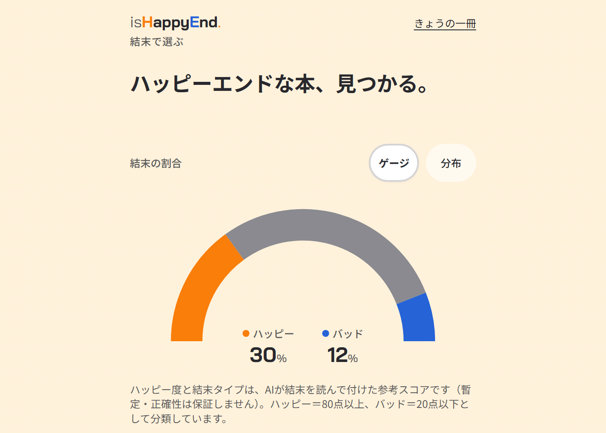
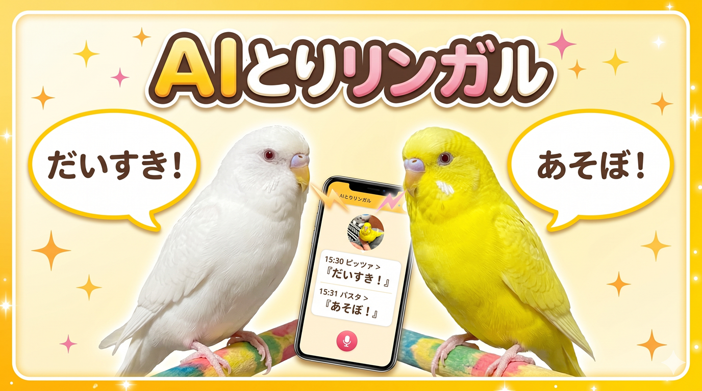
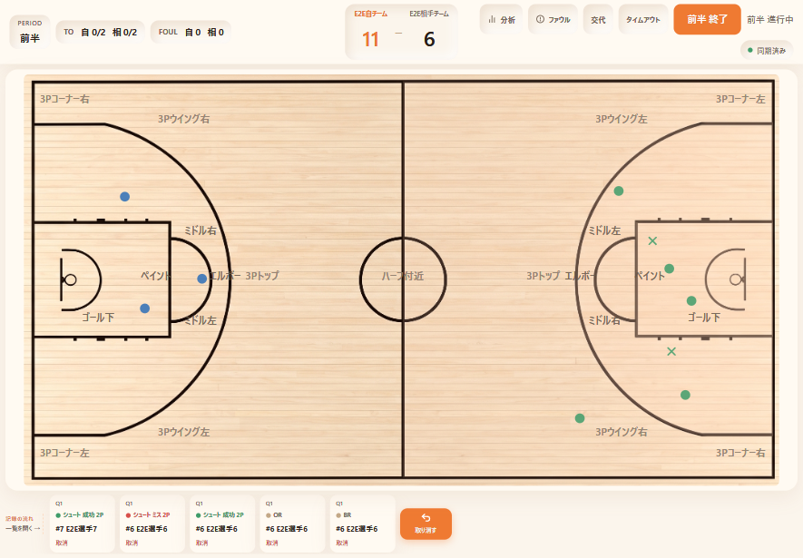
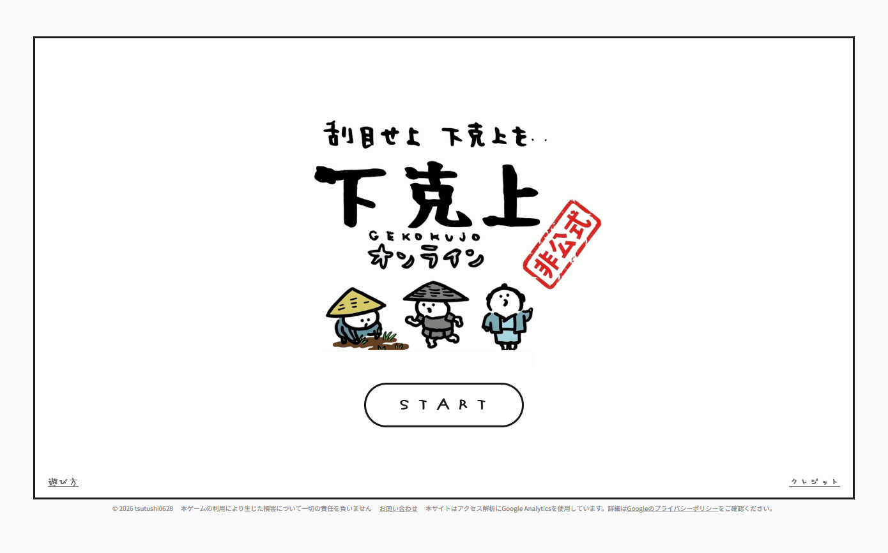
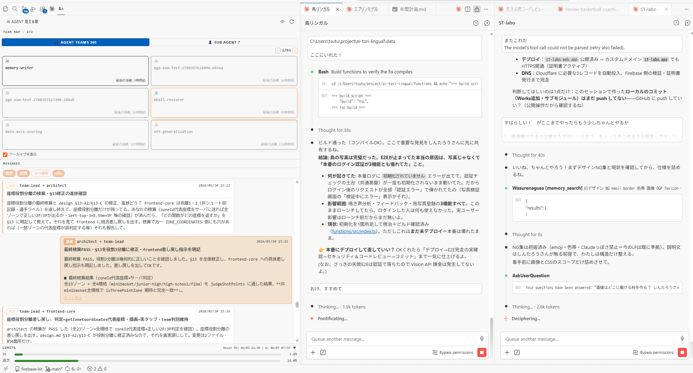

Shintaro
TSUKAMOTO
AIで課題解決と事業開発するPdM。
本業
も
副業
もAIネイティブ。
最近の一番の関心事は、如何にAIを人間に近づけるか
弁護士ドットコムの LegalDesign Lab 副所長／AI炎上チェッカーのPdM。 Frontria リーガルWGチェア。 クラウドサインPMM、 noteのPdM、 富士山マガジンサービスの新規事業担当etc...。
信条は「AIは最高の作業者。でも『何を作るか・なぜこう作るか』の判断は自分の仕事」。
もうひとつの顔はバスケばか。HCとレフリーのライセンス持ち、学生コーチもやってる。

isHappyEnd
ハッピーに終わる本も、切なく終わる本も。読みたい結末の型から次の一冊に出会える

AIとりリンガル
ピッツァとパスタはなんてしゃべってるのかな？！ を論文から構築。鳥版バウリンガル

AIバスケスコアリング（仮）
試合のスタッツや練習の成果を記録して可視化するWebアプリ。コーチの現場運用を支える。

下克上オンライン
やりにいこっか！！「下克上」！！「ちいかわ」に出てきたゲームを再現

AI Agent 見える君
AIエージェント同士の会話を、VS Codeのサイドバーでリアルタイムに見る拡張。完全ローカル動作。

Wasurenagusa
AIに「反省」を教えるメモリシステム（MCPサーバー）

its-demo-issho
VSCode、5列くらいで使いたいですよね。ワイドモニターもMacBookAirも自動で幅変更

バスケ動画解析（仮）
試合動画から選手の検出・追跡とボールの軌道を解析する画像AIパイプライン。ローカルGPUで動かす。
しゃべりにも行ってるよ
noteにもつらつらまとめてるよ